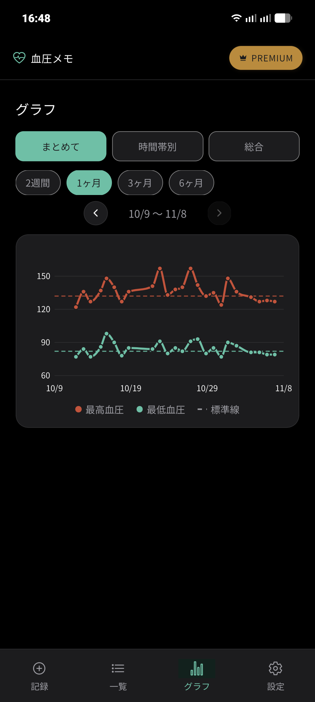
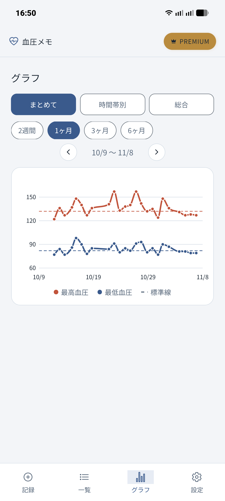
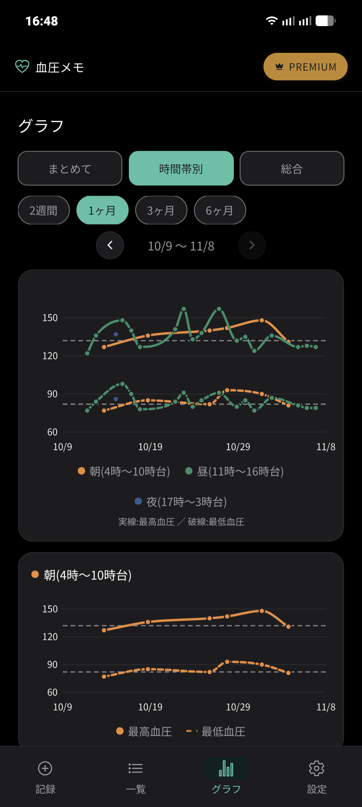
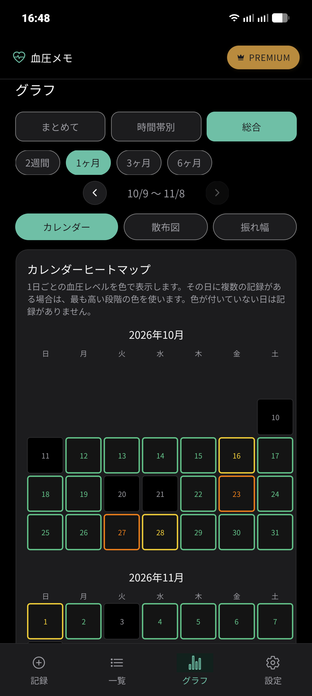
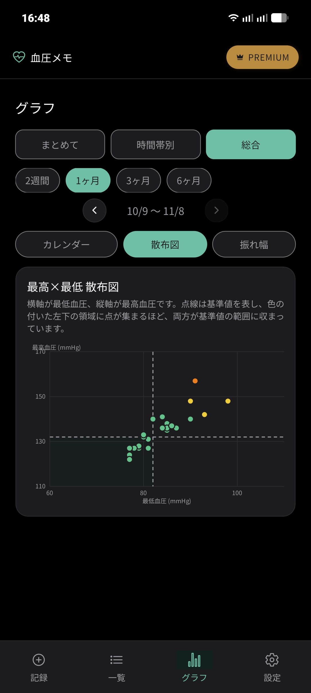
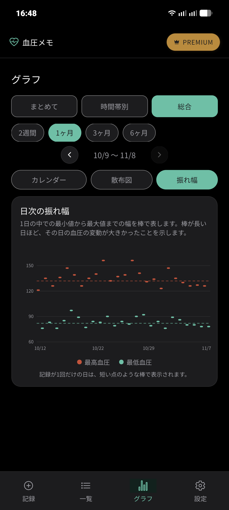

📖 はじめに（この画面でできること）
画面下部の「グラフ」タブでは、入力した血圧データを様々な角度からグラフィカルに可視化できます。上部のタブで「まとめて」「時間帯別」「総合」を切り替えられます。
🛠️ 詳しい操作手順と画面の見方
STEP 1
期間の切り替えと前後の移動
上部のピルボタンで表示期間を選択できます。
- 期間切り替え: 「2週間」「1ヶ月」「3ヶ月」「6ヶ月」から選択します（無料版は2週間まで）。
- 前後の移動: 期間表示の両脇にある「‹」と「›」をタップすると、前の期間や次の期間に移動して過去の推移をさかのぼれます。
STEP 2
「まとめて」タブで推移を見る
測定した最高血圧・最低血圧の推移が1つのグラフにまとめて描画されます。
- 最高血圧（実線）: 上の折れ線グラフです。
- 最低血圧（実線）: 下の折れ線グラフです。
- 標準線（破線）: 設定した基準値が破線で表示され、基準値を超えているかどうかが視覚的にすぐ分かります。

「まとめて」タブ（ダークモード）

「まとめて」タブ（ライトモード）
STEP 3
「時間帯別」タブで朝・昼・夜を比較する
測定時刻に応じてデータを3つの時間帯に自動分類し、それぞれの推移を色分けして表示します。
- 朝（4時〜10時台）: 橙色のライン
- 昼（11時〜16時台）: 緑色のライン
- 夜（17時〜3時台）: 青色のライン
グラフ下部には「朝（4時〜10時台）」などの個別グラフも表示され、時間帯別の平均や傾向をじっくり比較できます。

時間帯ごとのリズムや早朝高血圧の発見に役立つ時間帯別グラフ
STEP 4
「総合」タブ：① カレンダーヒートマップ
「総合」タブ内のサブタブ「カレンダー」を選ぶと、カレンダー形式で日ごとの血圧レベルがヒートマップ表示されます。
その日に複数の記録がある場合は、最も高い段階の色（緑・黄・橙・赤）が採用されるため、体調の変化が月全体でどうだったかを瞬時に見渡せます。

日ごとの最高レベルが色でわかるカレンダーヒートマップ
STEP 5
「総合」タブ：② 最高×最低 散布図
サブタブ「散布図」では、横軸に最低血圧、縦軸に最高血圧をとった散布図を表示します。
中央の点線がそれぞれの基準値を表しており、左下の領域に点が多く集まるほど両方が正常範囲内に収まっていることを示します。血圧バランスの偏りをチェックするのに最適です。

基準値との位置関係が直感的にわかる散布図
STEP 6
「総合」タブ：③ 日次の振れ幅
サブタブ「振れ幅」では、1日の中での「最小値から最大値までの幅」を縦の棒グラフで表します。
棒が長い日ほど、その日の血圧変動が激しかったことを示します（記録が1回だけの日には短い点のような棒で表示されます）。

1日の血圧の変動幅の大きさがひと目でわかる振れ幅グラフ
❓ グラフについてのよくある質問
Q グラフに表示される点線は何ですか？
設定画面で登録している「標準線（基準値）」です。最高血圧の目標値と最低血圧の目標値がそれぞれ破線で引かれます。
Q グラフのデータはタップして詳細を見られますか？
推移グラフの各プロット点や一覧画面のカードで、測定日時の詳細値を確認できます。